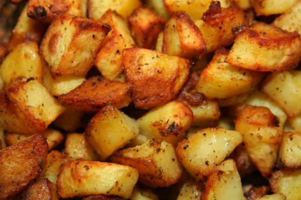

Roasted Potatoes Recipe

Ingredients
- Golden potatoes
- Garlic Powder
- salt/pepper
- Paprika
- Olive oil
- 1 cup of love :)
Recipe instructions
- Start your cooking out with Bismillah and love from your heart :)
- Preheat the oven to about 400.
- Chop up your Golden potatoes to the size you prefer. The smaller the cut the faster they cook.
- Add a little of olive oil, garlic Powder, garlic inion, and paprika on top.
- Spread your potatoes out on your pan. I add aluminum foil so I don't have to do too much cleaning afterwards :).
- Let them cook for about 20-25 minutes or until they are as golden or crispy as you would like them.
- Plate and hopefully enjoy :)
Return to main page